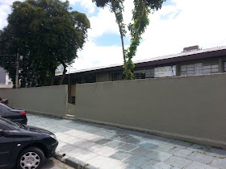

João Turin
O colégio Estadual João Turim, que segue o sistema cívico militar, está localizado no bairro Água Verde em Curitiba-PR. A escola atende o ensino fundamental, a partir do 6º ano, e o ensino médio, ela foi, em 2022, avaliada como uma das melhores escolas, não só da cidade, mas do estado. Os alunos usufruem de uma boa infraestrutura, uma boa educação e segue uma disciplina que permite um ambiente apropriado e indicado para o estudo.
